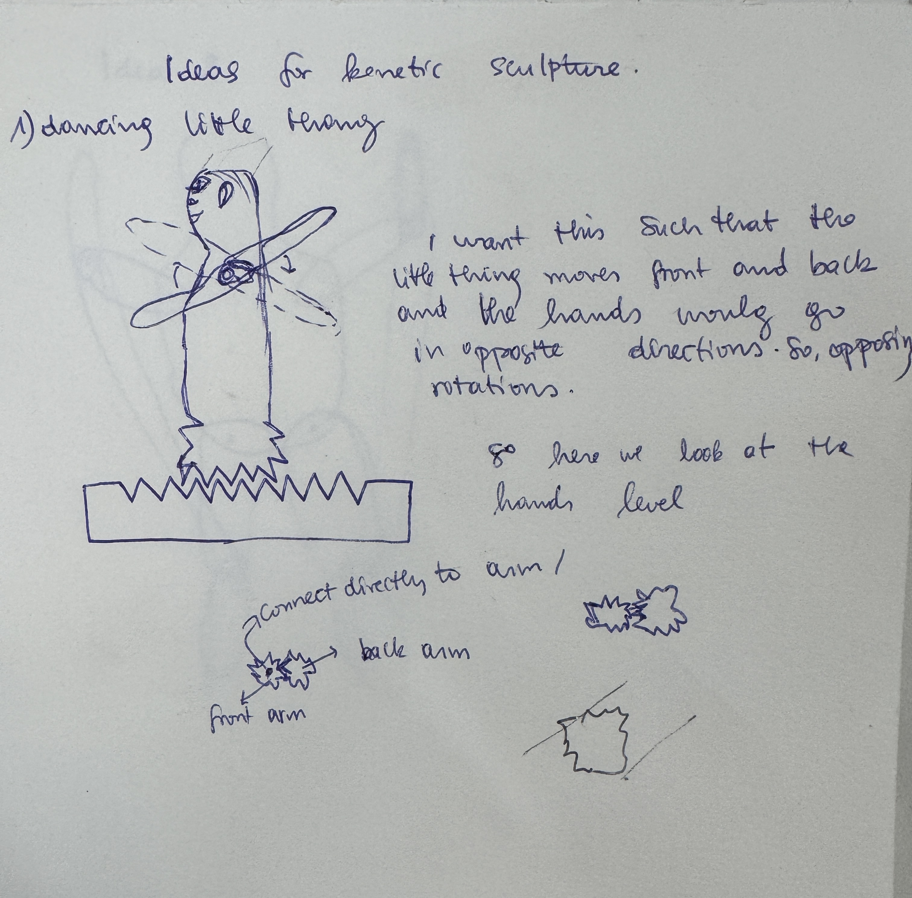

<div class="textcontainer">
<p class="margin"> </p>
<h3>Week 3: Hand Tools and Fabrication</h3>
<h4>Kinetic Sculpture</h4>
<p class="margin">
This week's assignment was to design and build a kenetic sculpture. My idea of a kenetic sculpture is directly related to my final project, which is a dancing robot (hopefully I stick with it). Initially, I wanted to design a robot that is able to move front and back as well as rotate the arms in opposing directons (if left goes clockwise, right goes clockwise). The sketch below shows the initial idea (which I am going to explore in the future)that is shoebox-sized or smaller.
</p>
<div>
<p></p>
</div>
<p class="margin">
This idea was not the best because it required using perpendicular gears, and given that the current materials are wood mostly, it was not the best to do. I drew then a simpler version of this initial idea. The hands are supposed to rotate in the same directions, powered by one motor, but the motor would be programmed to rotate clockwise and counterclockwise periodically. This would still mimic that dance movement, hands go up and down. I am defintely working on it as I ran into issues that relate to friction. THere was a lot of friction on the side of the gears that they wouldn't line up well, meaning that the hands couldn't rotate. There was also another issue with the motor having fre space to move, and this meant that the gears could not just tsay in place. These issues I am going to make an iteration next week to address them and make one better with taking account to friction.
</p>
<p>Below are demo videos for this assignment</p>
</div>